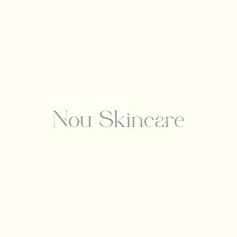

Trade Mark Journal No.2025/015 11 April 2025
UK00004178154 24 March 2025 (3)

- Class 3
- Cosmetic creams for the skin; Moisturisers(Cosmetics); Anti-Aging creams(for cosmetic use); Non Medicated Skincare Preparations; Cosmetic Creams for Skin Care; Skin Moisturiser; Skin Balms(Cosmetic); Beaty Care Cosmetics; Skincare Preparations; Skin Creams (for cosmetic use); Skin Care Cosmetics; Facial Cleansers(Cosmetic); Cosmetic Products in the form of aerosols for skincare; Facial creams(Cosmetics); Anti-aging moisturizers used us cosmetics; Anti-aging moisturisers; Cosmetics; Afer-sun lotions(for cosmetic use); Beauty lotions; Beauty serums; Anti-aging moisturiser; Skin moisturiser; Anti-aging skincare preparations; Anti-aging serums for cosmetic purposes; Skin care creams(cosmetic); Beauty serums with anti-aging properties; skin recovery creams(cosmetics); Anti-aging creams; After-sun oils(cosmetics); Skin care lotions(cosmetic); Sunscreen creams(for cosmetic use); Anti wrinkle creams(for cosmetic use); Facial moisturisers(cosmetic); Anti-aging creams; Skin creams(cosmetic); Moisturisers; Skin cleansers(cosmetic); Moisturising skin lotions(cosmetic); Suncare lotions(for cosmetic use); Skin moisturisers used as comsetics; Anti-aging creams(for cosmetic use); Skincare cosmetics; Acnee cleansers, cosmetic; Skin moisturisers; Suncare lotions; Cosmetic moisturisers; Moisturising skin creams(cosmetics).
PVSE LIMITED